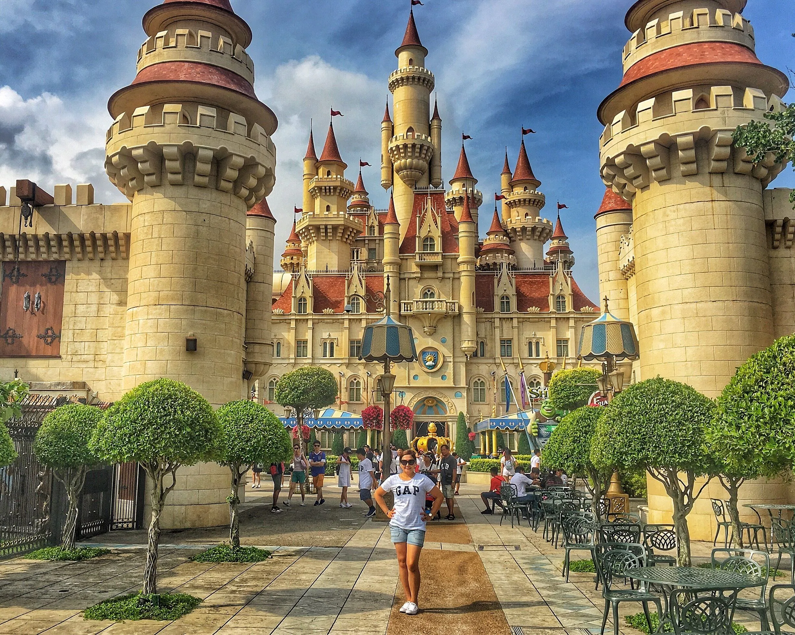
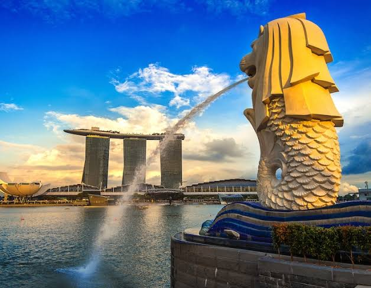

Singapore is a island city-state in Southeast Asia
Singapore is a island city-state in Southeast Asia. Operates as a leading global financial, trade, and transportation hub with one of the highest GDPs per capita in the world.
Main atractions in Singapore
-
Universal studios

Ultimate Theme Park Experience — Enjoy thrilling rides and shows at Universal Studios Singapore. Book online and save.Catch Illumination's Minions in a monstrously fun live show.
-
Marina Bay Sands

Marina Bay Sands is an iconic landmark and integrated resort fronting Marina Bay in Singapore, famous for its three striking towers and rooftop Sands SkyPark.
-
Merlion Park

Merlion Park is a famous public park and tourist landmark in Singapore located at One Fullerton, near the Central Business District.